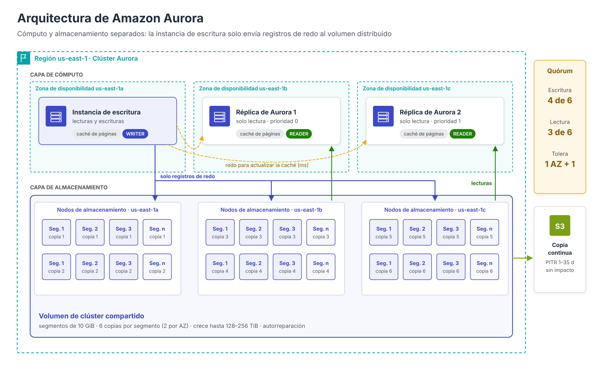
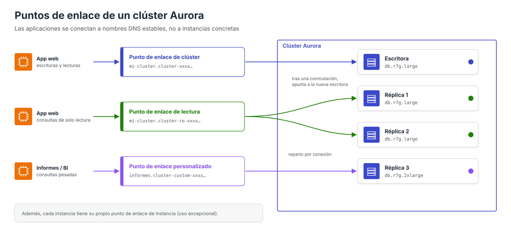

Amazon Aurora: arquitectura¶

Amazon Aurora es un motor de base de datos relacional desarrollado por AWS, compatible con MySQL y PostgreSQL, que forma parte de la familia Amazon RDS. Su característica distintiva no es el lenguaje ni la interfaz, que son los de los motores originales, sino su arquitectura: Aurora separa el cómputo del almacenamiento y sustituye el disco local de cada servidor por un sistema de almacenamiento distribuido diseñado específicamente para la nube.
Esta decisión de diseño, descrita por los ingenieros de AWS en la conferencia SIGMOD 2017, es la que explica la mayoría de sus propiedades: durabilidad, conmutación por error rápida, réplicas con un retraso mínimo, copias de seguridad sin impacto en el rendimiento y crecimiento automático del almacenamiento.
El problema de la arquitectura tradicional¶
En una base de datos relacional convencional, como MySQL o PostgreSQL sobre RDS, cada escritura genera varias operaciones de entrada/salida sobre el disco: el registro de transacciones (redo log o WAL), las páginas de datos modificadas, el registro binario para la replicación, la escritura doble (double-write) para evitar páginas corruptas, etc. Si además la instancia es Multi-AZ, todas estas escrituras se replican de forma síncrona a la standby.
En la nube, el cuello de botella no suele estar en la CPU ni en el disco, sino en la red: cada escritura atraviesa la red varias veces y la latencia se acumula.
La idea central de Aurora es que «el registro es la base de datos» (the log is the database): la instancia de base de datos solo envía a la capa de almacenamiento los registros de redo, y es el propio almacenamiento distribuido el que, de forma asíncrona y en segundo plano, aplica esos registros para materializar las páginas de datos. Esto reduce drásticamente el volumen de E/S por red.
Separación entre cómputo y almacenamiento¶
Un clúster de Aurora se compone de dos capas independientes:
| Capa | Componentes | Función |
|---|---|---|
| Cómputo | 1 instancia de escritura (writer, primaria) y hasta 15 réplicas de Aurora (readers) | Ejecutan el motor SQL: análisis de consultas, planificación, transacciones, caché de páginas (buffer pool) |
| Almacenamiento | Volumen de clúster compartido, distribuido en tres zonas de disponibilidad | Persiste los datos, aplica los registros de redo, se replica y se repara automáticamente |
Todas las instancias del clúster leen el mismo volumen. En consecuencia:
- Añadir una réplica no copia datos: la nueva instancia se conecta al volumen existente y empieza a servir lecturas en pocos minutos.
- Eliminar instancias no borra datos: los datos solo desaparecen al eliminar el clúster completo.
- El número de copias de los datos no depende del número de instancias: incluso un clúster con una sola instancia mantiene sus datos replicados en tres zonas.
El volumen de clúster¶
El volumen de clúster es un almacenamiento virtual respaldado por discos SSD con estas características:
- Seis copias en tres zonas de disponibilidad: el volumen se divide en segmentos de 10 GiB, y cada segmento se replica seis veces, dos en cada zona de disponibilidad. Cada grupo de seis copias de un segmento se denomina grupo de protección.
- Escrituras y lecturas por quórum: una escritura se confirma cuando 4 de las 6 copias la han persistido; la recuperación de un segmento requiere 3 de 6 copias.
- Tolerancia a fallos «AZ+1»: el diseño permite perder una zona de disponibilidad completa sin perder la capacidad de escribir, y una zona más una copia adicional sin perder datos.
- Autorreparación: los bloques y discos se comprueban de forma continua. Un segmento dañado se reconstruye a partir de las demás copias; al ser segmentos pequeños, la reparación se completa en minutos.
- Crecimiento automático: el volumen crece a medida que se insertan datos, hasta 128 TiB o 256 TiB según la versión del motor, y se reduce cuando se eliminan tablas o datos en las versiones que lo admiten. Solo se paga por el espacio realmente utilizado.
- Archivos temporales: las ordenaciones grandes o la creación de índices utilizan almacenamiento local de la instancia, no el volumen compartido.
Quórum de escritura y de lectura¶
La elección de 4/6 y 3/6 no es arbitraria. Para que el sistema sea coherente, cualquier conjunto de lectura debe solaparse con cualquier conjunto de escritura (3 + 4 > 6), y dos escrituras no pueden ignorarse mutuamente (4 + 4 > 6). Con dos copias por zona, la pérdida de una zona completa deja 4 copias, suficientes para seguir escribiendo.
| Situación | Copias disponibles | ¿Escritura? | ¿Datos íntegros? |
|---|---|---|---|
| Funcionamiento normal | 6 | Sí | Sí |
| Fallo de un disco | 5 | Sí | Sí |
| Caída de una zona de disponibilidad | 4 | Sí | Sí |
| Caída de una zona + un disco adicional | 3 | No, hasta reparar | Sí (puede reconstruirse) |
Instancias y réplicas de Aurora¶
Instancia de escritura¶
Es la única instancia que acepta operaciones de escritura (las variantes distribuidas Aurora PostgreSQL Limitless Database y Aurora DSQL, descritas en el apartado de despliegue, siguen un modelo distinto). Envía los registros de redo a las seis copias del segmento afectado y confirma la transacción al alcanzar el quórum.
Réplicas de Aurora¶
Las réplicas leen del mismo volumen, por lo que no necesitan reproducir las escrituras: la instancia de escritura les envía los registros de redo únicamente para que actualicen las páginas que tienen en su caché. El retraso de réplica (replica lag) suele ser de milisegundos, frente a los segundos o minutos que puede alcanzar la replicación asíncrona de un motor convencional.
Cada réplica tiene asignado un nivel de prioridad (promotion tier, de 0 a 15) que determina el orden en el que se promociona en caso de fallo de la instancia de escritura.
Conmutación por error¶
Cuando la instancia de escritura falla, Aurora promociona automáticamente una réplica (la de mayor prioridad y, en caso de empate, la de mayor tamaño). Como la réplica ya tiene acceso a todos los datos, la conmutación suele completarse en menos de 30 segundos. Si el clúster no tiene réplicas, Aurora intenta crear una nueva instancia, lo que lleva más tiempo.
Además, la recuperación tras un reinicio es muy rápida (normalmente menos de 60 segundos), porque no es necesario reproducir el registro de transacciones al arrancar: la capa de almacenamiento ya aplica los registros de redo de forma continua.
Puntos de enlace de un clúster¶

Aurora proporciona varios nombres DNS que abstraen a las aplicaciones de las instancias concretas:
| Punto de enlace | Formato | Apunta a | Uso |
|---|---|---|---|
| De clúster (escritura) | mi-cluster.cluster-xxxx.us-east-1.rds.amazonaws.com |
La instancia de escritura actual | Todas las escrituras; tras una conmutación por error apunta automáticamente a la nueva primaria |
| De lectura (reader) | mi-cluster.cluster-ro-xxxx.us-east-1.rds.amazonaws.com |
Las réplicas, con reparto de conexiones | Consultas de solo lectura |
| Personalizado (custom) | mi-grupo.cluster-custom-xxxx… |
Un subconjunto de instancias elegido por el administrador | Separar cargas, por ejemplo informes en instancias más grandes |
| De instancia | mi-instancia.xxxx.us-east-1.rds.amazonaws.com |
Una instancia concreta | Diagnóstico o ajustes muy específicos |
Buena práctica
Las aplicaciones deben conectarse siempre a los puntos de enlace de clúster y de lectura, nunca a los de instancia, para beneficiarse de la conmutación por error automática. El reparto que realiza el punto de enlace de lectura se produce por conexión, no por consulta.
Copias de seguridad, restauración y clonado¶
- Copias continuas: Aurora envía de forma continua e incremental los datos del volumen a Amazon S3, sin afectar al rendimiento ni requerir ventana de copia. Permiten restaurar el clúster a cualquier segundo del periodo de retención (de 1 a 35 días).
- Instantáneas manuales: se conservan hasta que se eliminan y pueden copiarse a otras regiones o compartirse con otras cuentas.
- Clonado rápido (fast cloning): crea un clúster nuevo que comparte inicialmente las páginas del original mediante copia en escritura (copy-on-write). El clon se crea en minutos, independientemente del tamaño de la base de datos, y solo consume espacio adicional por las páginas que se modifican. Es muy útil para crear entornos de pruebas a partir de datos de producción.
- Backtrack (solo Aurora MySQL): permite «rebobinar» el clúster a un momento anterior sin restaurar una copia, por ejemplo para deshacer un
DELETEsinWHERE. Debe activarse al crear el clúster.
Modelos de facturación del almacenamiento¶
| Configuración | Qué se factura | Recomendado cuando |
|---|---|---|
| Aurora Standard | Instancias + almacenamiento + E/S (por millón de peticiones) | El gasto en E/S es inferior al 25 % del total |
| Aurora I/O-Optimized | Instancias + almacenamiento (más caros), sin coste por E/S | El gasto en E/S supera el 25 % del total |
Puede pasarse de Standard a I/O-Optimized una vez cada 30 días, y en sentido contrario en cualquier momento.
Comparativa arquitectónica con RDS Multi-AZ¶
| Aspecto | RDS for MySQL Multi-AZ | Aurora MySQL |
|---|---|---|
| Almacenamiento | Un volumen EBS por instancia | Volumen compartido, 6 copias en 3 AZ |
| Datos replicados | Bloques completos del volumen | Solo registros de redo |
| Instancias que leen | Solo la primaria | Primaria + hasta 15 réplicas |
| Retraso de las réplicas de lectura | Segundos o más (replicación asíncrona) | Milisegundos |
| Conmutación por error | 1–2 minutos | Normalmente < 30 segundos |
| Copia de seguridad | Instantánea EBS (breve impacto de E/S en Single-AZ) | Continua, sin impacto |
| Crecimiento del almacenamiento | Aprovisionado / autoescalado | Automático, pago por uso |
Referencias¶
- Verbitski, A., Gupta, A., Saha, D., Brahmadesam, M., Gupta, K., Mittal, R., Krishnamurthy, S., Maurice, S., Kharatishvili, T., Bao, X. (2017). Amazon Aurora: Design Considerations for High Throughput Cloud-Native Relational Databases. ACM SIGMOD 2017 — Amazon Science
- AWS. What is Amazon Aurora? — Guía del usuario de Aurora
- AWS. Amazon Aurora storage — Almacenamiento de Aurora
- AWS Database Blog. Amazon Aurora under the hood: quorums and correlated failure — Artículo
- AWS. Amazon Aurora MySQL/PostgreSQL database clusters now support up to 256 TiB of storage volume (07/2025) — Anuncio
- AWS. High availability for Amazon Aurora — Alta disponibilidad
- AWS. Amazon Aurora FAQ: availability and durability — Preguntas frecuentes
- AWS. Amazon Aurora endpoint connections — Puntos de enlace
- AWS. Cloning a volume for an Amazon Aurora DB cluster — Clonado
- AWS. Backtracking an Aurora DB cluster — Backtrack